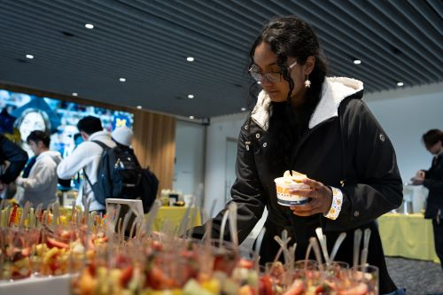

Our Mission
To ensure members of the University of Michigan community—whether on a tight budget or physically restrained from getting to a grocery store—receive equitable access to healthy, nutritious, and nourishing food and the ability to prepare it for themselves or others.
What We Provide
-
Food
Produce, dairy, meat, bread, frozen and shelf-stable foods (i.e. rice, cans, tuna, etc.)
-
Kitchen and Cooking
Dishes, silverware, pots & pans, Tupperware, cutting boards, knives, and other kitchenware
-
Personal and Household
Trash bags, toilet paper, cleaning supplies, hygiene products, school supplies, baby items and more
-
Support
Get connected to campus experts like CAPS, Dean of Students and Financial Aid, as well as SNAP (Michigan’s food program)
Make an Appointment Now
Shopping at the Maize and Blue Cupboard is by appointment only. Please make an appointment by visiting our sign up page sign up.